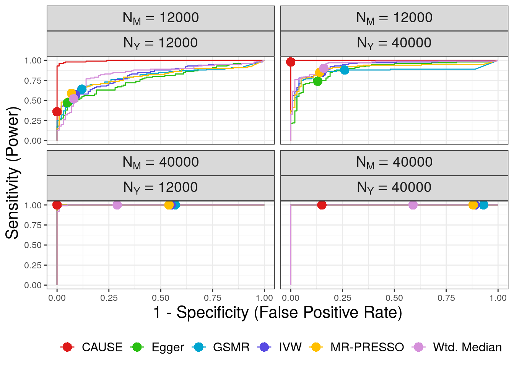

Simulations
Jean Morrison
2019-07-10
Last updated: 2019-07-24
Checks: 6 1
Knit directory: cause/
This reproducible R Markdown analysis was created with workflowr (version 1.4.0.9000). The Checks tab describes the reproducibility checks that were applied when the results were created. The Past versions tab lists the development history.
Great! Since the R Markdown file has been committed to the Git repository, you know the exact version of the code that produced these results.
The global environment had objects present when the code in the R Markdown file was run. These objects can affect the analysis in your R Markdown file in unknown ways. For reproduciblity it’s best to always run the code in an empty environment. Use wflow_publish or wflow_build to ensure that the code is always run in an empty environment.
The following objects were defined in the global environment when these results were created:
| Name | Class | Size |
|---|---|---|
| data | environment | 56 bytes |
| env | environment | 56 bytes |
The command set.seed(20181014) was run prior to running the code in the R Markdown file. Setting a seed ensures that any results that rely on randomness, e.g. subsampling or permutations, are reproducible.
Great job! Recording the operating system, R version, and package versions is critical for reproducibility.
Nice! There were no cached chunks for this analysis, so you can be confident that you successfully produced the results during this run.
Great job! Using relative paths to the files within your workflowr project makes it easier to run your code on other machines.
Great! You are using Git for version control. Tracking code development and connecting the code version to the results is critical for reproducibility. The version displayed above was the version of the Git repository at the time these results were generated.
Note that you need to be careful to ensure that all relevant files for the analysis have been committed to Git prior to generating the results (you can use wflow_publish or wflow_git_commit). workflowr only checks the R Markdown file, but you know if there are other scripts or data files that it depends on. Below is the status of the Git repository when the results were generated:
Ignored files:
Ignored: .Rhistory
Ignored: .Rproj.user/
Ignored: sim_results/
Ignored: src/RcppExports.o
Ignored: src/cause.so
Ignored: src/log_likelihood_functions.o
Untracked files:
Untracked: analysis/figure/ldl_cad.Rmd/
Untracked: analysis/figure/little_test.Rmd/
Untracked: cause.Rcheck/
Untracked: docs/cause.bib
Untracked: docs/figure/cause_figure_1_standalone.pdf
Untracked: gwas_data/
Untracked: ll_v7_notes.Rmd
Untracked: tests/
Note that any generated files, e.g. HTML, png, CSS, etc., are not included in this status report because it is ok for generated content to have uncommitted changes.
These are the previous versions of the R Markdown and HTML files. If you’ve configured a remote Git repository (see ?wflow_git_remote), click on the hyperlinks in the table below to view them.
| File | Version | Author | Date | Message |
|---|---|---|---|---|
| Rmd | 112bcde | Jean Morrison | 2019-07-25 | smally typo |
| html | b115414 | Jean Morrison | 2019-07-25 | Build site. |
| Rmd | 6aecf91 | Jean Morrison | 2019-07-25 | change some wording and add extraction code |
| html | 8bbb516 | Jean Morrison | 2019-07-15 | Build site. |
| Rmd | 86ffddd | Jean Morrison | 2019-07-15 | wflow_publish(c(“analysis/index.Rmd”, “analysis/simulations.Rmd”)) |
| html | 1074c61 | Jean Morrison | 2019-07-12 | Build site. |
| Rmd | 7e3c495 | Jean Morrison | 2019-07-11 | more plotting details |
| Rmd | aeeacea | Jean Morrison | 2019-07-11 | lots of plotting details. still working |
| html | d2f0f74 | Jean Morrison | 2019-07-10 | Build site. |
| Rmd | 6c171b2 | Jean Morrison | 2019-07-10 | wflow_publish(“analysis/simulations.Rmd”) |
| html | 165f2c8 | Jean Morrison | 2019-07-09 | Revert “Build site.” |
| html | 2666541 | Jean Morrison | 2019-07-09 | Build site. |
| Rmd | 16285d6 | Jean Morrison | 2019-07-09 | wflow_publish(“analysis/simulations.Rmd”) |
| html | a1b74c5 | Jean Morrison | 2019-07-09 | Build site. |
| Rmd | 31a7da8 | Jean Morrison | 2019-07-09 | wflow_publish(“analysis/simulations.Rmd”) |
| html | 0dd65cc | Jean Morrison | 2019-06-25 | Build site. |
| Rmd | b78e77f | Jean Morrison | 2019-06-25 | wflow_publish(files = c(“analysis/simulations.Rmd”)) |
| html | 286f4e9 | Jean Morrison | 2019-06-25 | Build site. |
| Rmd | 8f3b82e | Jean Morrison | 2019-06-25 | wflow_publish(files = c(“analysis/about.Rmd”, “analysis/index.Rmd”, “analysis/ldl_cad.Rmd”, “analysis/license.Rmd”, |
Introduction
This page gives instructions for running the simulations that we ran to evaluate CAUSE and will allow you to reproduce the results the paper. It will hopefully also serve as a resource for explaining those results in more detail and allow you to modify simulations to run your own experiments. There are a lot of parameters that can be changed. We tried to explore a reasonable range of scenarios but there are many more variations that could be tried. Running the simulations involves multiple set-up steps, mostly software installation and may take a bit of time, especially if you are new to DSC. Additionally, completing the simulations requires several hours of computing and needs to be done on a cluster. If you don’t have access to that kind of computing resource you may still find this section useful. All of our results can be downloaded and we will include some discussions of the patterns that we observed as we go along.
Set Up
Software Installation
Simulations are run using the causeSims R package. The package can be installed with
devtools::install_github("jean997/causeSims")This package relies on a few R packages that are not on CRAN, which you will need to install separately. For detailed installation instructions including installation of supporting R packages for other methods see here. There you can also find a walk through of a single simulation and explanations of the functions contained in the package.
We conduct simulations using the Dynamical Statisical Comparisons software. You will need to have DSC installed and it will be helpful to take a look at the tutorial if you haven’t used DSC before.
Set Up The Analysis Directory
To set up the analysis create a working directory that you will run the simulations in. Make sure all the software in the previous section is installed.
From inside this working directory use the R command
library(causeSims)
setup_sims()This function downloads the following files:
LD data: This is used for simulating summary statistics and is placed into a sub-directory
data. The LD data are downloaded from here and contain data for HapMap3 SNPs on chromosome 19 estimated from the CEU 1000 Genomes samples.DSC files: These contain instructions for DSC on how to simulate data and analyze it. Jump to this subsection for a detailed description of the DSC files and simulation parameters. If you want to run your own experiments, these files should provide a good starting place for that. The set up function downloads three DSC files. One is for evaluating false positives in the presence of different levels of correlated pleiotropy, one is for evaluating power when there is a true causal effect, and one is for evaluating the robustness of CAUSE to different prior distributions on \(\gamma\) and \(\eta\) (see supplementary note of the paper).
A configuration file for running DSC on a cluster. This file is set up for the University of Chicago Research Computing Cluster so you will need to change it to match your cluster set up. Even if you are using the U of C cluster, you will need to change the home directory and account lines of this file. Read about using DSC with a compute cluster here (We are using the “On Host” option) and modify
config.ymlas needed.Some code for plotting and results summarization
Run DSC
To run DSC use the following commands at the command line
nohup dsc --replicate 100 --host config.yml -c 4 power.dsc > pwr_dsc.out &
nohup dsc --replicate 100 --host config.yml -c 4 false_positives.dsc > fp_dsc.out &
nohup dsc --replicate 100 --host config.yml -c 4 sigma_g.dsc > sg_dsc.out &Depending on your computing resources and how many jobs you allow to run simultaneously, this could take several hours for each command. Errors can occur that stop DSC, usually a result of interfacing with the cluster. For example, DSC may fail to detect that a job has completed. If this happens, simply restart the failed job using the same command. DSC will pick up where it left off since all results are saved along the way. Running these commands will generate lots of *.err and *.out files all of which can be safely deleted. Results will be in directories named fp (false positives), pwr (power) and sigma_g (results for testing the prior on \(\gamma\) and \(\eta\)).
Look at Results and Plot Them
False positive and power results
The script extract_results_main.R will use the dscrutils package to extract results from the false positive and power analyses. If you are modifying the analysis and have changed the names of the output directories, you will need to change them in this file also. Depending on the changes you have made, you may need to make other modifications. Read more about dscrutils here and in the dscrutils documentation. This script will save R objects containing CAUSE, LCV, and other MR method results for both analyses. It will append the date so it won’t over-write the results downloaded by setup_sims(). Run it at the command line using
Rscript extract_results_main.Ror from inside R using source(extract_results_main.R). It will take several minutes to extract all of the results. If you would like to use your own files to plot, change the file names in the code below which uses the downloaded results.
library(tidyverse)
library(gridExtra)
library(pROC)
library(jcolors)The results extraction script makes a data frame for CAUSE results and a data frame for all the other MR methods. There is also a data frame for results from LCV but this is discussed later on. We first read in results and look around a little
causedf <- readRDS("sim_results/main_causedf.RDS")
dim(causedf)[1] 6400 26head(causedf) DSC simulate.output.file tau gamma q omega eta h1 h2 n1
1 1 simulate/simulate_1 0.00 0.0000000 0 0 0 0.25 0.25 12000
2 1 simulate/simulate_2 0.01 0.1000000 0 0 0 0.25 0.25 12000
3 1 simulate/simulate_3 0.02 0.1414214 0 0 0 0.25 0.25 12000
4 1 simulate/simulate_4 0.03 0.1732051 0 0 0 0.25 0.25 12000
5 1 simulate/simulate_5 0.04 0.2000000 0 0 0 0.25 0.25 12000
6 1 simulate/simulate_6 0.05 0.2236068 0 0 0 0.25 0.25 12000
n2 neffect1 neffect2 lcv_q1 lcv_q2 gcp m_sig params
1 12000 1000 1000 0 0 0 10 (0,0,0)
2 12000 1000 1000 1 0 1 5 (0.01,0,0)
3 12000 1000 1000 1 0 1 7 (0.02,0,0)
4 12000 1000 1000 1 0 1 8 (0.03,0,0)
5 12000 1000 1000 1 0 1 15 (0.04,0,0)
6 12000 1000 1000 1 0 1 6 (0.05,0,0)
cause.output.file cause.p cause.eta_sharing
1 cause/simulate_1_cause_params_1_cause_1 1.00000000 0.011931561
2 cause/simulate_2_cause_params_1_cause_1 0.99999998 0.002510281
3 cause/simulate_3_cause_params_1_cause_1 0.17667815 0.130967317
4 cause/simulate_4_cause_params_1_cause_1 0.09319743 0.275080972
5 cause/simulate_5_cause_params_1_cause_1 0.13777660 0.201534222
6 cause/simulate_6_cause_params_1_cause_1 0.03422957 0.285438995
cause.q_sharing cause.eta_causal cause.q_causal cause.gamma_causal
1 0.04109263 -0.0038530765 0.04901066 0.00479154
2 0.04354778 -0.0170810260 0.05051196 0.00754432
3 0.06559798 -0.0003402543 0.04756247 0.08344094
4 0.16287869 -0.0070851343 0.05040652 0.12319126
5 0.11645133 -0.0099462311 0.04614923 0.08230970
6 0.14942537 0.0079122698 0.04220322 0.13940896
tag
1 pwr_simulate/simulate_1
2 pwr_simulate/simulate_2
3 pwr_simulate/simulate_3
4 pwr_simulate/simulate_4
5 pwr_simulate/simulate_5
6 pwr_simulate/simulate_6The frist 18 columns of the data frame are all simulation parameters, information about the simulation files, or simple statistics computed about the simulated data. These include
gamma,eta,q: True values of \(\gamma\), \(\eta\) and \(q\) used to simulate data.paramsgives a character string listing \((\gamma, \eta, q)\).tau,omega: Transformations of \(\gamma\) and \(\eta\) respectively. \(\tau\) is the proportion of \(Y\) heritability explained by the causal effect of trait \(M\), equal to \(\tau = \gamma^2 h^2_{M}/h^2_Y\). In our case \(h^2_M = h^2_Y\) for all simulations so \(\tau = \gamma^2\). \(\omega\) is defined as \(\omega = \eta^2 h^2_M/h^2_Y = \eta^2\).h1,h2: Heritabilitites for trait \(M\) and \(Y\) respectivelyh1$ = h^2_M$ andh2\(= h^2_Y\). In our case these are equal to 0.25 for all simulations.n1,n2: Sample size for GWAS of traits \(M\) and \(Y\) respectively. These can be equal to 12,000 (low power) or 40,000 (high power).neffect,neffect2: Expected number of effect SNPS for trait \(M\) and \(Y\). In our case equal to 1000 for all simulations.lcv_q1,lcv_q2,gcp: True values of the LCV parameters \(q_1\), \(q_2\) and GCP. These are computed from \(\gamma\), \(\eta\) and \(q\).m_sig: The number of genome-wide significant variants for trait \(M\) after pruning for LD using an threshold of \(r^2 < 0.1\)
Values extracted from the CAUSE results all begin with cause.. For example, cause.p is the CAUSE \(p\)-value. Posterior medians for \(\gamma\), \(\eta\) and \(q\) are reported for the sharing and causal models (e.g. cause.q_causal is the posterior median of \(q\) in the causal model).
The mrdf data frame gives results for alternative MR methods. The first 18 columns are the same as in the causedf data frame. For these methods, we have extracted only the method name (in the mr column) and the \(p\)-value (mr.p).
mrdf <- readRDS("sim_results/main_mrdf.RDS")
dim(mrdf)[1] 32000 21head(mrdf) DSC simulate.output.file tau gamma q omega eta h1 h2 n1 n2
1 1 simulate/simulate_1 0.00 0.0 0 0 0 0.25 0.25 12000 12000
2 1 simulate/simulate_1 0.00 0.0 0 0 0 0.25 0.25 12000 12000
3 1 simulate/simulate_1 0.00 0.0 0 0 0 0.25 0.25 12000 12000
4 1 simulate/simulate_1 0.00 0.0 0 0 0 0.25 0.25 12000 12000
5 1 simulate/simulate_1 0.00 0.0 0 0 0 0.25 0.25 12000 12000
6 1 simulate/simulate_2 0.01 0.1 0 0 0 0.25 0.25 12000 12000
neffect1 neffect2 lcv_q1 lcv_q2 gcp m_sig params mr mr.p
1 1000 1000 0 0 0 10 (0,0,0) ivw 0.9043105
2 1000 1000 0 0 0 10 (0,0,0) egger 0.9970743
3 1000 1000 0 0 0 10 (0,0,0) mrp 0.9043105
4 1000 1000 0 0 0 10 (0,0,0) wm 0.2693825
5 1000 1000 0 0 0 10 (0,0,0) gsmr 0.8497915
6 1000 1000 1 0 1 5 (0.01,0,0) ivw 0.5163502
tag
1 pwr_simulate/simulate_1
2 pwr_simulate/simulate_1
3 pwr_simulate/simulate_1
4 pwr_simulate/simulate_1
5 pwr_simulate/simulate_1
6 pwr_simulate/simulate_2with(mrdf, table(mr))mr
egger gsmr ivw mrp wm
6400 6400 6400 6400 6400 We first summarize results grouping by sample size and simulation setting. Some of the MR methods will have missing results if there are too few variants. We consider this as not having rejected the null hypothesis or a non-significant result. CAUSE does not have any missing results.
cause_summ <- causedf %>%
group_by(q, tau, omega, n1, n2) %>%
summarize(n_sig = sum(cause.p < 0.05, na.rm=T),
missing = sum(is.na(cause.p))) %>%
mutate(analysis = "cause")
mr_summ <- mrdf %>%
group_by(q, tau, omega, n1, n2, mr) %>%
summarize(n_sig = sum(mr.p < 0.05, na.rm=T),
missing = sum(is.na(mr.p))) %>%
rename(analysis = "mr")
res <- bind_rows(cause_summ, mr_summ) %>%
ungroup() %>%
mutate(label = fct_recode(analysis, "CAUSE"="cause",
"Egger" = "egger", "GSMR"="gsmr",
"IVW"="ivw",
"MR-PRESSO"="mrp", "Wtd. Median" = "wm"),
n1 = factor(paste0("N[M]==", n1)),
n2 = factor(paste0("N[Y]==", n2)))
filter(res, analysis=="cause") %>% with(., all(missing == 0))[1] TRUEPower
Now we can plot!
First we plot power with \(\tau\) on the horizontal axis and the number of times each method rejected the null hypothesis on the vertical axis.
#colors
cc <- as.character(jcolors("default"))
cols <- c(cc[3], cc[1:2], cc[4:5], "#D590DA")
#plot
pwr <- res %>%
filter(tau != 0 | (tau == 0 & omega == 0 & q == 0)) %>% #This line includes only the power simulations.
ggplot(.) +
geom_line(aes(x=tau, y=n_sig/100, color=label)) +
geom_point(aes(x=tau, y=n_sig/100, color=label, shape=label)) +
scale_color_manual(values=cols) +
scale_shape_manual(values= c(16, 3, 4, 0, 2, 6:8)) +
geom_hline(yintercept=0.05, linetype=2) +
xlab(expression("Percentage of Y heritability explained by M (" ~ tau ~ "=" ~ gamma^2 ~ h[M]^2/h[Y]^2 ~ ")")) +
ylab("Percent Significant") +
theme_bw() +
theme(legend.title = element_blank(),
strip.text = element_text(size=14),
axis.title = element_text(size=16),
legend.text = element_text(size=12),
legend.position = "bottom") +
guides(color=guide_legend(nrow=1),
linetype=guide_legend(nrow=1),
shape=guide_legend(nrow=1) ) +
facet_wrap(~n1*n2, nrow=2, labeller = label_parsed)
pwr
| Version | Author | Date |
|---|---|---|
| b115414 | Jean Morrison | 2019-07-25 |
CAUSE has lower power than the other methods except when the power for trait \(M\) is low and the power for trait \(Y\) is high. This is expected since CAUSE uses a more stringent criterion to conclude that the data are consistent with a causal effect. It is able to achieve better power when \(M\) is under-powered and \(Y\) is well powered because it uses all variants genome-wide rather than only those that are highly significant for trait \(M\). This is an important setting because it may be applicable to scenarios when \(M\) is a biomarker or molecular trait and \(Y\) is a complex triat.
False Positives
Next we plot false positives. Our simulations include two values of \(\eta\) (\(\sqrt{0.05}\) and \(\sqrt{0.02}\)). Although we only had space to present one set of results in the paper, we will make plots for both here. We plot the proportion of \(M\) effect variants that display correlated pleiotropy, \(q\), on the horizontal axis and the number of discoveries on the vertical axis. The bottom row of plots are for the larger value of \(\eta\) and are the ones shown in the paper. For convenience, in extracting results, we copy the results for \(q=0\).
z1 <- filter(res, omega == 0 & tau == 0 & q == 0) %>% mutate(omega = 0.05)
z2 <- filter(res, omega == 0 & tau == 0 & q == 0) %>% mutate(omega = 0.02)
res2 <- bind_rows(res, z1, z2) %>%
filter(!(q == 0 & omega == 0 & tau == 0))fp <- res2 %>%
filter(tau == 0) %>%
ggplot(.) +
geom_line(aes(x=q, y=n_sig/100, color=label)) +
geom_point(aes(x=q, y=n_sig/100, color=label, shape=label)) +
geom_hline(yintercept=0.05, linetype=2) +
scale_color_manual(values=cols) +
scale_shape_manual(values= c(16, 3, 4, 0, 2, 6:8)) +
geom_hline(yintercept=0.05, linetype=2) +
xlab("Proportion of variants acting through U (q)") +
ylab("Percent Significant") +
theme_bw() +
theme(legend.title = element_blank(),
strip.text = element_text(size=14),
axis.title = element_text(size=16),
legend.text = element_text(size=12),
legend.position = "bottom") +
guides(color=guide_legend(nrow=1),
linetype=guide_legend(nrow=1),
shape=guide_legend(nrow=1) ) +
facet_wrap(~omega*n1*n2, nrow=2, labeller=label_parsed)
fp
| Version | Author | Date |
|---|---|---|
| b115414 | Jean Morrison | 2019-07-25 |
In all cases CAUSE has a lower false positive rate than alternative methods. The false positive rate increases for large values of \(q\) and is worse when the effect of the shared factor is stronger.
ROC Curves
We use ROC curves to evaluate how well each method is able to distinguish simulations with a causal effect of size \(\gamma = \sqrt{0.05}\) from simulations with a shared factor with an equal effect acconting for 30% of the trait \(M\) vairants. Both of these parameters can be modified. The first step is to combine the CAUSE and alternative MR results into a single data frame
x1 <- causedf %>%
mutate(analysis = "cause", stat = -log10(cause.p)) %>%
select(tag, q, omega, tau, n1, n2, analysis, stat)
x2 <- mrdf %>%
mutate(stat = -log10(mr.p)) %>%
rename(analysis = mr) %>%
select(tag, q, omega, tau, n1, n2, analysis, stat)
full_results <- bind_rows(x1, x2)
full_results <- full_results %>%
mutate(label = fct_recode(analysis, "CAUSE"="cause",
"Egger" = "egger", "GSMR"="gsmr",
"IVW"="ivw",
"MR-PRESSO"="mrp", "Wtd. Median" = "wm"))Next we use the pROC package.
eff <- 0.05
my_q <- 0.3
n1s <- c(12000, 12000, 40000, 40000)
n2s <- c(12000, 40000, 12000, 40000)
methods <- with(full_results, unique(label)) %>%
as.vector(.)
cc <- as.character(jcolors("default"))
cols <- c(cc[3], cc[1:2], cc[4:5], "#D590DA")
roc_df <-lapply(seq_along(n1s), function(i){
my_n1 <- n1s[i]
my_n2 <- n2s[i]
rocs <- lapply(methods, function(m){
#cat(m, " ")
xx <- filter(full_results, n1 == my_n1 & n2 == my_n2 & label == m &
( tau == eff | (omega == eff & q == my_q & tau == 0)))
xx$stat[is.na(xx$stat)] <- 0
with(xx, roc(predictor = stat, response = tau !=0)) %>%
with(., data.frame(thresh = thresholds, spec = specificities,
sens = sensitivities, method = m,
n1 = my_n1, n2 = my_n2,
stringsAsFactors=F)) %>%
return()
})
do.call(rbind, rocs)
})
roc_df <- do.call(rbind, roc_df) %>%
mutate(n1 = factor(paste0("N[M]==", n1)),
n2 = factor(paste0("N[Y]==", n2)))
head(roc_df) thresh spec sens method n1 n2
1 -Inf 0.00 1 CAUSE N[M]==12000 N[Y]==12000
2 1.928655e-16 0.05 1 CAUSE N[M]==12000 N[Y]==12000
3 5.472558e-15 0.06 1 CAUSE N[M]==12000 N[Y]==12000
4 2.472668e-11 0.07 1 CAUSE N[M]==12000 N[Y]==12000
5 5.650660e-11 0.08 1 CAUSE N[M]==12000 N[Y]==12000
6 9.814568e-11 0.09 1 CAUSE N[M]==12000 N[Y]==12000# A data frame with points to add to the curve
pw <- filter(res, tau == eff )
f <- filter(res, omega == eff & q == my_q & tau ==0)
df <- select(pw, label, n_sig, n1, n2) %>%
rename(power = n_sig) %>%
full_join(., f, c("label", "n1", "n2")) %>%
rename(fp = n_sig) %>%
select(label, power, fp, n1, n2) %>%
filter(label %in% methods) %>%
rename(method=label)
## Plotting!
plt <- roc_df %>%
arrange(sens) %>%
ggplot(.) +
geom_line(aes(x=1-spec, y=sens, col=method, group=method, linetype=method)) +
geom_point(aes(x=fp/100, y = power/100, col=method, shape=method), size =4 , data=df) +
scale_color_manual(values=cols) +
scale_linetype_manual(values = rep(1, 6)) +
scale_shape_manual(values = c(rep(16, 6))) +
xlab("1 - Specificity (False Positive Rate)") + ylab("Sensitivity (Power)") +
theme_bw() +
theme(legend.title = element_blank(),
strip.text = element_text(size=14),
axis.title = element_text(size=16),
legend.text = element_text(size=12),
legend.position = "bottom") +
guides(color=guide_legend(nrow=1),
linetype=guide_legend(nrow=1),
shape=guide_legend(nrow=1)) +
facet_wrap(~n1*n2, nrow=2, labeller= label_parsed)
plt
| Version | Author | Date |
|---|---|---|
| b115414 | Jean Morrison | 2019-07-25 |
Prior robustness results
The sigma_g anlaysis is intended to evaluate how sensitive CAUSE is to changes in the prior on \(\gamma\) and \(\eta\). These parameters have the same \(N(0, \sigma_{\gamma, \eta})\) prior distribution. By default, \(\sigma_{\gamma \eta}\) is chosen guided by the data. These results dmeonstrate that, within a wide range, CAUSE is insensitive to the value of \(\sigma_{\gamma \eta}\).
The R script extract_sigma_g.R will use dscrutils to extract simulation results and store them in a data frame. Run it at the command line with
Rscript extract_sigma_g.Ror from inside an R session using source.
This code will append the date to the file it saves so it won’t save over the results downloaded by setup_sims(). If you want to use your own data frame, change the file name in the commands below.
causedf <- readRDS("sim_results/sg_causedf.RDS")
head(causedf) DSC simulate.output.file tau gamma q omega eta h1 h2 n1
1 1 simulate/simulate_1 0.00 0.0000000 0 0 0 0.25 0.25 12000
2 1 simulate/simulate_1 0.00 0.0000000 0 0 0 0.25 0.25 12000
3 1 simulate/simulate_1 0.00 0.0000000 0 0 0 0.25 0.25 12000
4 1 simulate/simulate_2 0.05 0.2236068 0 0 0 0.25 0.25 12000
5 1 simulate/simulate_2 0.05 0.2236068 0 0 0 0.25 0.25 12000
6 1 simulate/simulate_2 0.05 0.2236068 0 0 0 0.25 0.25 12000
n2 neffect1 neffect2 lcv_q1 lcv_q2 gcp m_sig params
1 12000 1000 1000 0 0 0 12 (0,0,0)
2 12000 1000 1000 0 0 0 12 (0,0,0)
3 12000 1000 1000 0 0 0 12 (0,0,0)
4 12000 1000 1000 1 0 1 9 (0.05,0,0)
5 12000 1000 1000 1 0 1 9 (0.05,0,0)
6 12000 1000 1000 1 0 1 9 (0.05,0,0)
cause_sigma_g.output.file quant sigma_g
1 cause_sigma_g/simulate_1_cause_params_1_cause_sigma_g_1 0.51 8.9197112
2 cause_sigma_g/simulate_1_cause_params_1_cause_sigma_g_2 0.65 0.5803009
3 cause_sigma_g/simulate_1_cause_params_1_cause_sigma_g_3 0.80 0.2656855
4 cause_sigma_g/simulate_2_cause_params_1_cause_sigma_g_1 0.51 8.9197112
5 cause_sigma_g/simulate_2_cause_params_1_cause_sigma_g_2 0.65 0.5803009
6 cause_sigma_g/simulate_2_cause_params_1_cause_sigma_g_3 0.80 0.2656855
z eta_sharing q_sharing eta_causal q_causal gamma_causal
1 -0.5461963 -0.08614480 0.03227185 0.028694201 0.03801121 -0.03322635
2 -0.4892988 -0.07568029 0.04260754 0.018572988 0.04527922 -0.03298326
3 -0.4297365 -0.05659584 0.05292346 0.007849239 0.05476068 -0.03219930
4 1.4732631 0.27284495 0.16470454 -0.007890599 0.03751927 0.11590717
5 1.6179259 0.26001457 0.17152739 -0.003179130 0.04402581 0.11544675
6 1.5826705 0.22719281 0.18457916 0.002465637 0.05338622 0.11385987
p
1 0.70753449
2 0.68768490
3 0.66630635
4 0.07034006
5 0.05283928
6 0.05674829with(causedf, table(sigma_g))sigma_g
0.265685475321082 0.580300937746447 8.91971124189946
1200 1200 1200 with(causedf, table(params))params
(0,0,0) (0,0.05,0.3) (0.05,0,0)
1200 1200 1200 The only columns that we have not seen previously are quant and sigma_g. sigma_g gives the value of \(\sigma_{\gamma \eta}\) used in each simulation. These are large, medium and small values which are chosen so that \(\sqrt{0.05}\) is the 51st, 65th and 80th quantile (quant) of the \(N(0, \sigma_{\gamma \eta})\) distribution respectively. In this data frame we have ommited the cause. prefix on columns because CAUSE is the only method we are evaluating.
There are three sets of parameters used in simulations. Below we calculate the correlation in \(p\)-value and posterior median for each parameter in each setting across the three values of \(\sigma_{\gamma \eta}\). The following code only reports the minimum correlation for each parameter-simulation setting combination and the correlation between the medium and small values of \(\sigma_{\gamma \eta}\).
vars <- c("z", "p", "eta_sharing", "q_sharing",
"eta_causal", "q_causal", "gamma_causal")
min_cor <- expand.grid(variable = vars,
params = unique(causedf$params), stringsAsFactors=F)
min_cor$min_cor <- NA
min_cor$cor_med_small <- NA
for(i in seq(nrow(min_cor))){
v <- min_cor$variable[i]
X <- select(causedf, simulate.output.file, params, quant, one_of(v)) %>%
spread(quant, get(v)) %>%
filter(params==min_cor$params[i]) %>%
select(one_of(c("0.51", "0.65", "0.8")))
min_cor$min_cor[i] <- min(cor(X))
min_cor$cor_med_small[i] <- cor(X[,"0.65"], X[,"0.8"])
}
min_cor variable params min_cor cor_med_small
1 z (0,0,0) 0.9413760 0.9488980
2 p (0,0,0) 0.9916459 0.9939591
3 eta_sharing (0,0,0) 0.3500210 0.9717212
4 q_sharing (0,0,0) 0.8413687 0.9872975
5 eta_causal (0,0,0) 0.3603472 0.9325197
6 q_causal (0,0,0) 0.7260232 0.9658187
7 gamma_causal (0,0,0) 0.9989405 0.9994984
8 z (0.05,0,0) 0.9979358 0.9982020
9 p (0.05,0,0) 0.9964440 0.9974132
10 eta_sharing (0.05,0,0) 0.6521383 0.8758111
11 q_sharing (0.05,0,0) 0.9996888 0.9998863
12 eta_causal (0.05,0,0) 0.2743656 0.9163213
13 q_causal (0.05,0,0) 0.6408410 0.9771773
14 gamma_causal (0.05,0,0) 0.9994321 0.9997125
15 z (0,0.05,0.3) 0.9659368 0.9721875
16 p (0,0.05,0.3) 0.9971477 0.9976421
17 eta_sharing (0,0.05,0.3) 0.6150360 0.9564461
18 q_sharing (0,0.05,0.3) 0.9949857 0.9987768
19 eta_causal (0,0.05,0.3) 0.6098137 0.9237515
20 q_causal (0,0.05,0.3) 0.7366983 0.9726195
21 gamma_causal (0,0.05,0.3) 0.9987725 0.9994594This code is also contained in summarize_sigma_g.R.
What’s in the DSC Files?
We will now go in detail through one of the DSC files so you can see what is happening and how to make changes to run your own experiments. We will look at false_positives.dsc but power.dsc and sigma_g.dsc are similar.
The DSC statement is at the top:
DSC:
define:
mr: ivw, egger, mrp, wm, twas, wm, gsmr
run: simulate*gw_sig,
simulate*LCV,
simulate*mr,
simulate*cause_params*cause
replicate: 100
output: fpThis statement tells DSC what to run. In define we define a group of modules. These will turn up later in the file. In run we tell DSC what to run. For example, simulate*gw_sig means that DSC should run the simulate module followed by the gw_sig module which will use the results of the simulate module. replicate indicates the number of replicates to run (though this is over-ridden by the --replicate flag in the DSC call above) and output names the output directory.
The rest of the document defines modules. All of our modules use R code and most of them rely on the causeSims R package.
Simulation Modules
The simulation module:
simulate: R(library(causeSims);
snps <- readRDS("data/chr19_snpdata_hm3only.RDS");
evd_list <- readRDS("data/evd_list_chr19_hm3.RDS");
dat <- sum_stats(snps, evd_list,
n_copies = 30,
n1 = n1, n2=n2,
h1=h1, h2=h1,
neffect1 = neffect1, neffect2 = neffect2,
tau = tau, omega = omega, q = q,
cores = 4, ld_prune_pval_thresh = 0.01,
r2_thresh = 0.1))
q: 0.1, 0.2, 0.3, 0.4, 0.5
omega: 0.02, 0.05
tau: 0
n1: 12000, 40000
n2: 12000, 40000
neffect1: 1000
neffect2: 1000
h1: 0.25
h2: 0.25
$sim_params: c(q = q, omega = omega, tau = tau, h1 = h1, h2 = h2, n1 = n1, n2 = n2, neffect1 = neffect1, neffect2 =neffect2)
$dat: datThe R code contained in R() is the guts of this module. A data object named dat is generated using the sum_stats function from the causeSims R pacakge. Below this, we specify parameters used to simulate the data. Most important are q, omega, and tau. q is the proportion of variants acting through \(U\) while omega and tau are standardized versions of \(\gamma\) and \(\eta\) in the paper. tau is the proportion of \(Y\) heritability explained by the causal effect of \(M\) on \(Y\) times the sign of \(\gamma\), \[
\tau = sign(\gamma)\frac{\gamma^2 h^2_{M}}{h^{2}_{Y}},
\] and omega is the proportion of \(Y\) heritability explained by \(U\), divided by \(q\) and multiplied by the sign of \(\eta\). \[
\omega = sign(\eta)\frac{\eta^2 h^2_{M}}{h^{2}_{Y}}
\] This parameterization is sometimes more convenient for running simulations that using \(\eta\) and \(\gamma\). However, the sum_stats function will accept either omega and tau arguments or eta and gamma. Note that here we have specified that the function can use 4 cores. This should match the n_cpu parameter in the simulate section of the config file. The sum_stats function generates data both with and without LD. In this file we only analyze the “with LD” data but we will describe how to make modifications to analyze both or only the “no LD” data.
The gw_sig module is a helper module. This module computes the GCP (a parameter defined by LCV (O’Connor and Price 2019)) and computes the number of genome-wide significant variants. It also stores all the simulation parameters which makes it easier to extract them. Extracting parameters from the simulate module will require reading in the entire data set, objects created by the gw_sig module are smaller and faster to read.
gw_sig: R(library(causeSims);
m_sig_nold <- with($(dat), sum(p_value_nold < thresh ));
y_sig_nold <- with($(dat), sum(2*pnorm(-abs(beta_hat_2_nold/seb2)) < thresh ));
m_sig <- with($(dat), sum(p_value < thresh & ld_prune==TRUE));
params <- $(sim_params);
tau <- as.numeric(params["tau"]);
omega <- as.numeric(params["omega"]);
q <- as.numeric(params["q"]);
h1 <- as.numeric(params["h1"]);
h2 <- as.numeric(params["h2"]);
neffect1 <- as.numeric(params["neffect1"]);
neffect2 <- as.numeric(params["neffect2"]);
gamma <- sqrt(tau*sum(h2)/sum(h1))*sign(tau);
eta <- sqrt(abs(omega)*sum(h2)/sum(h1))*sign(omega);
#LCV parameters
if(q == 0 & tau == 0){
q.1 <- q.2 <- 0;
gcp <- 0;
}else if(q == 0){
q.1 <- 1;
q.2 <- 0;
gcp <- 1;
}else{
q.1 <- sqrt(q);
q.2 <- eta * sqrt(q) * sqrt(h1) / sqrt(h2);
gcp = (log(q.2^2) - log(q.1^2)) / (log(q.2^2) + log(q.1^2));
};
gcp_mom <- gcp_moments($(dat), h1, h2)
)
thresh: 5e-8
$m_sig: m_sig
$m_sig_nold: m_sig_nold
$y_sig_nold: y_sig_nold
$q: q
$omega: omega
$tau: tau
$gamma: gamma
$eta: eta
$h1: h1
$h2: h2
$n1: as.numeric(params["n1"])
$n2: as.numeric(params["n2"])
$neffect1: as.numeric(params["neffect1"])
$neffect2: as.numeric(params["neffect2"])
$lcv_q1: q.1
$lcv_q2: q.2
$lcv_gcp: gcp
$lcv_gcp_mom: gcp_mom$gcpCAUSE Modules
We have divided CAUSE analysis into parameter estimation and model fitting steps. This makes it easier to experiment with changes only to the parameter estimation step.
cause_params: R(library(causeSims);
p1 <- cause_params_sims($(dat), null_wt = null_wt, no_ld=FALSE);
)
null_wt: 10
$cause_params_ld: p1
cause: R(library(causeSims);
library(cause);
cause_res <- cause_sims($(dat), $(cause_params_ld), no_ld = FALSE);
z <- -1*summary(cause_res)$z;
p <- pnorm(-z);
quants <- summary(cause_res)$quants)
$cause_res: cause_res
$sigma_g: cause_res$sigma_g
$eta_med_2: quants[[1]][1,2]
$q_med_2: quants[[1]][1,3]
$eta_med_3: quants[[2]][1,2]
$gamma_med_3: quants[[2]][1,1]
$q_med_3: quants[[2]][1,3]
$z: z
$p: pBoth modules use wrapper functions from the causeSims package. These are very simple wrappers that make it easy to run CAUSE on the simulated data format. Note that here we use no_ld = FALSE in both modules. If you want to use the data that is simulated without LD instead you can change no_ld = TRUE. You could get results for both using the following set of modules.
cause_params: R(library(causeSims);
p1 <- cause_params_sims($(dat), null_wt = null_wt, no_ld=FALSE);
p2 <- cause_params_sims($(dat), null_wt = null_wt, no_ld=TRUE);
)
null_wt: 10
$cause_params_ld: p1
$cause_params_nold: p2
cause: R(library(causeSims);
library(cause);
if(no_ld==FALSE){
cause_res <- cause_sims($(dat), $(cause_params_ld), no_ld = no_ld);
else{
cause_res <- cause_sims($(dat), $(cause_params_nold), no_ld = no_ld);
}
z <- -1*summary(cause_res)$z;
p <- pnorm(-z);
quants <- summary(cause_res)$quants)
$no_ld: TRUE, FALSE
$cause_res: cause_res
$sigma_g: cause_res$sigma_g
$eta_med_2: quants[[1]][1,2]
$q_med_2: quants[[1]][1,3]
$eta_med_3: quants[[2]][1,2]
$gamma_med_3: quants[[2]][1,1]
$q_med_3: quants[[2]][1,3]
$z: z
$p: pAlternative MR Modules
There are many modules for alternative MR methods. Modules for IVW regression, Egger regression, MR-PRESSO, and the weighted median method are very similar and rely on wrappers from causeSims. We can just look at one of these.
ivw: R(library(causeSims);
res <- ivw($(dat), p_val_thresh=thresh, no_ld = no_ld);
)
thresh: 5e-8
no_ld: FALSE
$z: res$z
$p: res$pTo run on the data without LD change the no_ld parameter to no_ld: TRUE or no_ld: TRUE, FALSE to run both.
The GSMR module is a little more complicated
gsmr: R(library(causeSims);
evd_list <- readRDS("data/evd_list_chr19_hm3.RDS");
res <- gsmr_sims($(dat), evd_list, p_val_thresh = 5e-8, no_ld = FALSE);
if(!is.null(res)){
z <- res$bxy/res$bxy_se;
est <- res$bxy;
p <- res$bxy_pval;
}else{
z <- est <- p <- NA;
}
)
thresh: 5e-8
$z: z
$p: p
$est_gsmr: est
$gsmr: resGSMR requires the LD structure and sometimes returns errors. In this case the gsmr_sims wrapper returns NULL and we set results to missing. If no_ld = TRUE the LD data in evd_list is simply ignored.
LCV Module
Results from LCV are not compared with CAUSE in the paper because LCV is performing a different test than other MR methods. However, we have implemented wrappers and a module to run LCV.
LCV: R(library(causeSims);
res <- try(lcv_sims($(dat),no_ld = no_ld, sig.thresh = thresh));
if(class(res) == "try-error"){
res <- list(pval.gcpzero.2tailed=NA, gcp.pm = NA, gcp.pse = NA);
};
)
thresh: 30
no_ld: FALSE
$p: res$pval.gcpzero.2tailed
$gcp_mean: res$gcp.pm
$gcp_pse: res$gcp.pse
$gcp_obj: resWhen LCV returns errors, we set results to missing.
sessionInfo()R version 3.6.1 (2019-07-05)
Platform: x86_64-pc-linux-gnu (64-bit)
Running under: Ubuntu 18.04.2 LTS
Matrix products: default
BLAS: /usr/lib/x86_64-linux-gnu/openblas/libblas.so.3
LAPACK: /usr/lib/x86_64-linux-gnu/libopenblasp-r0.2.20.so
locale:
[1] LC_CTYPE=en_US.UTF-8 LC_NUMERIC=C
[3] LC_TIME=en_US.UTF-8 LC_COLLATE=en_US.UTF-8
[5] LC_MONETARY=en_US.UTF-8 LC_MESSAGES=en_US.UTF-8
[7] LC_PAPER=en_US.UTF-8 LC_NAME=C
[9] LC_ADDRESS=C LC_TELEPHONE=C
[11] LC_MEASUREMENT=en_US.UTF-8 LC_IDENTIFICATION=C
attached base packages:
[1] stats graphics grDevices utils datasets methods base
other attached packages:
[1] jcolors_0.0.4 pROC_1.15.0 gridExtra_2.3 forcats_0.4.0
[5] stringr_1.4.0 dplyr_0.8.3 purrr_0.3.2 readr_1.3.1
[9] tidyr_0.8.3 tibble_2.1.3 ggplot2_3.2.0 tidyverse_1.2.1
loaded via a namespace (and not attached):
[1] tidyselect_0.2.5 xfun_0.8 haven_2.1.1
[4] lattice_0.20-38 colorspace_1.4-1 generics_0.0.2
[7] vctrs_0.2.0 htmltools_0.3.6 yaml_2.2.0
[10] rlang_0.4.0 pillar_1.4.2 glue_1.3.1
[13] withr_2.1.2 modelr_0.1.4 readxl_1.3.1
[16] plyr_1.8.4 munsell_0.5.0 gtable_0.3.0
[19] workflowr_1.4.0.9000 cellranger_1.1.0 rvest_0.3.4
[22] evaluate_0.14 labeling_0.3 knitr_1.23
[25] highr_0.8 broom_0.5.2 Rcpp_1.0.1
[28] scales_1.0.0 backports_1.1.4 jsonlite_1.6
[31] fs_1.3.1 hms_0.5.0 digest_0.6.20
[34] stringi_1.4.3 grid_3.6.1 rprojroot_1.3-2
[37] cli_1.1.0 tools_3.6.1 magrittr_1.5
[40] lazyeval_0.2.2 crayon_1.3.4 whisker_0.3-2
[43] pkgconfig_2.0.2 zeallot_0.1.0 xml2_1.2.0
[46] lubridate_1.7.4 assertthat_0.2.1 rmarkdown_1.13
[49] httr_1.4.0 rstudioapi_0.10 R6_2.4.0
[52] nlme_3.1-140 git2r_0.26.1 compiler_3.6.1